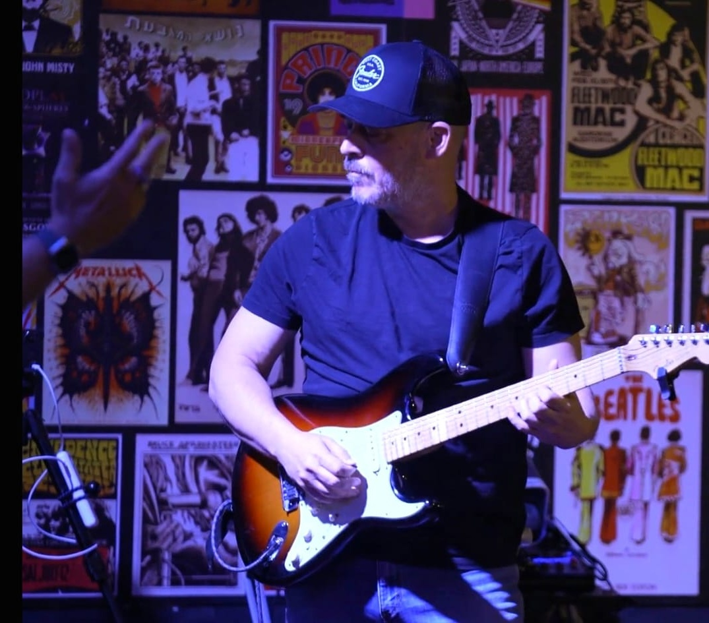

I design products that help experts turn complexity into confident action.
Selected work across AI products, machine-learning platforms, expert workflows, design education, architecture, and hands-on creative practice.

Depth as advantage
Selected work
Markiply
AI decision-support proof of concept that helps marketers decide what to do and whom to trust. Built with AI tools; in development with design partners.
Imubit platform
Platform designed from zero for industrial AI/ML workflows, low-code/no-code model building, evaluation, monitoring, and trust.
COS Dashboard
Coordinated Operating Strategy platform — unifying predictive models, system of records, and strategic initiatives for evidence-based industrial operations. In development.

qbiq
Human-in-the-loop UX for AI-generated office planning: review, edit, compare, and report.
Matrix Experience
Large-scale UX for public-service, financial, mobile, and data-heavy platforms.
Audioburst
UX process for audio creators: personas, user flows, sketches and wireframes for finding, editing and sharing audio segments.
Madafino
Design & buy custom shelves on your own wall: UX process from needs to wireframes, plus live Figma prototypes.
What I bring
Model Builder, evaluation, monitoring, qbiq, Audioburst, and enterprise UX services.
Low-code/no-code ML workflows, explainability, trust building, and human-in-the-loop decision-making.
Platform IA, design systems, architecture, academic program design, and scalable product structure.
Figma, Lovable, Claude, HTML/CSS/JS, design-system components, and live prototype thinking.
Earlier professional experience
A creative, systems-oriented designer.
I came to product design through architecture, design education, and years of hands-on creative work. That background helps me work on complex products without losing sight of people, use, trust, and clarity.
Outside work, music and making are part of the same mindset: craft, iteration, attention, and rhythm.